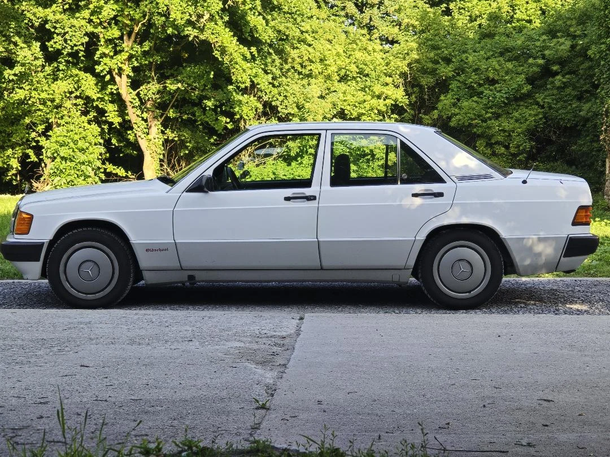
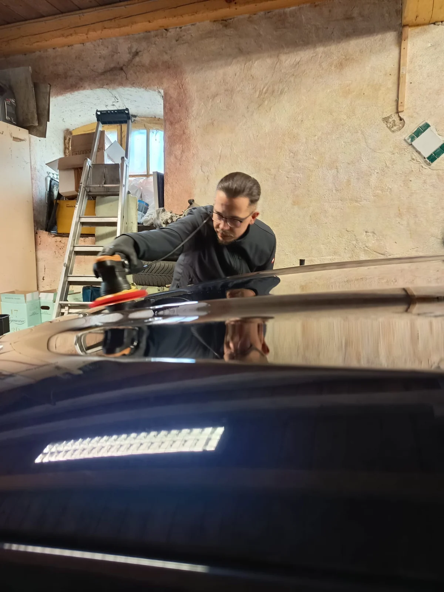
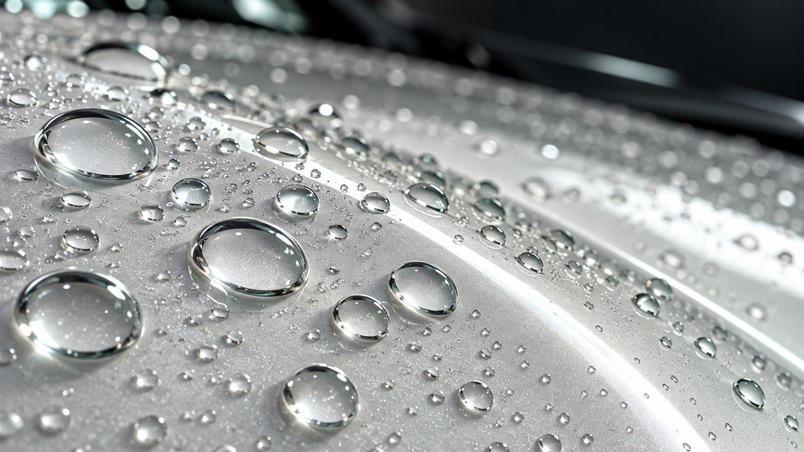
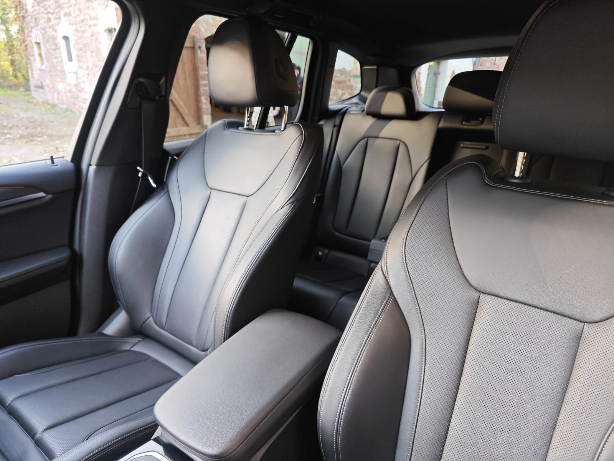
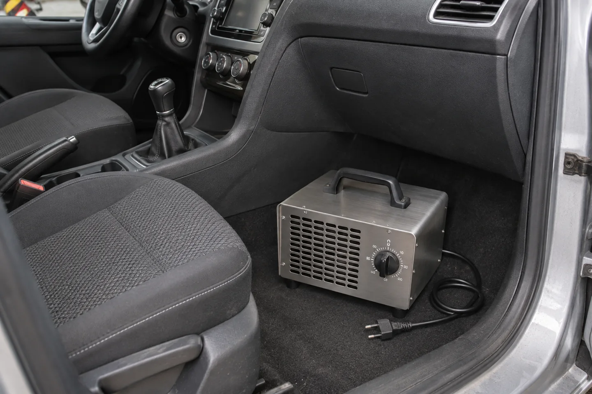
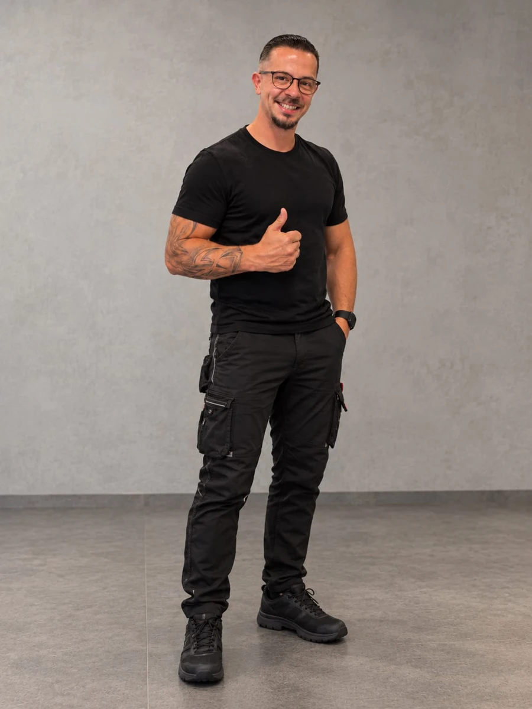

DIE DETAILING-GARAGE · MANNHEIM
Black Magic.
Bis ins Detail.
Bereich am Auto anklicken.
Die Aufbereitung startet als Film.
Antippen oder klicken: Film starten.
Interaktive KI-Visualisierung · Vergleich öffnen und den Regler verschieben.
Charakter bleibt.
Glanz kommt zurück.
Vom Alltagsauto bis zum Klassiker: echte Fahrzeuge, echte Details. Entdecke Tims Arbeit an Lack, Felgen und Innenräumen in seinen Originalaufnahmen.
Ein Klassiker im Detail
Mercedes-Benz 190 E

DER KLASSIKER
Mercedes-Benz 190 E
Außen. Innen. Bis ins Detail.
Der Unterschied steckt im Detail
Sorgfalt bis
in die Tankmulde.
Glänzender Lack ist der Anfang. Zur Aufbereitung gehören auch die Stellen, an denen sich über die Jahre Spuren sammeln.
Das Handwerk dahinterBalken ziehen oder Pfeiltasten nutzen. Links: komplett sauber. Rechts: komplett dreckig.
Originalaufnahmen aus unterschiedlichen Blickwinkeln.
Dein Auto.
Seine Bedürfnisse.
Jeder Lack, jedes Material und jeder Zustand ist anders. Deshalb beginnt die passende Aufbereitung mit einem persönlichen Blick auf dein Auto.

POLITUR / ORIGINALFOTOPolitur & Versiegelung
Reflexionen, die wieder klar sind. Eine gründliche Vorbereitung und eine auf den Lack abgestimmte Politur bringen Glanz und Farbtiefe zurück.

KERAMIK / KI-VISUALISIERUNGKeramikversiegelung
Ein Finish, das die Pflege leichter macht. Eine hydrophobe Oberfläche lässt Wasser abperlen. Welche Versiegelung passt, besprechen wir anhand deines Fahrzeugs.

INNENRAUM / ORIGINALFOTOInnenraumaufbereitung
Wieder gern einsteigen. Von den Oberflächen bis zu den schwer erreichbaren Ecken: sorgfältige Reinigung, passend zu Material und Zustand.
Lackkorrektur
Feine Waschspuren, Swirls und Hologramme im Lack gezielt bearbeiten. Welche Verbesserung möglich ist, zeigt die Besichtigung.
Lederaufbereitung
Leder reinigen, pflegen und bei Bedarf versiegeln. Die Behandlung wird auf das Material und seinen Zustand abgestimmt.
Außenpflege
Gründliche Außenreinigung und Pflege von Lack, Felgen und Details – abgestimmt auf die Verschmutzung.
Leasingrückgabe
Das Fahrzeug vor der Rückgabe aufbereiten. Gemeinsam mit Tim klären, welche Arbeiten sinnvoll sind.

OZONBEHANDLUNG / KI-SYMBOLBILDOzonbehandlung
Behandlung gegen hartnäckige Gerüche im Innenraum. Tim prüft, ob sie für dein Fahrzeug infrage kommt.
Felgenversiegelung
Die gereinigten Felgen mit einer passenden Versiegelung schützen und die spätere Pflege erleichtern.
Die passende Leistung und den Preis legt Tim nach der persönlichen Besichtigung fest.
DAS WISSEN DAHINTER
Was löst eigentlich
den Schmutz?
Was Reiniger bewirken, warum die Bürste dazugehört und wie aus feinen Waschspuren wieder klare Reflexionen werden.
Die Wirkprinzipien allgemein erklärt. Produkte, Einwirkzeiten und Behandlung richten sich nach Material und Zustand deines Autos.
AußenwäscheWarum löst Schaum den Schmutz?
Wasser allein kommt gegen einen fettigen Straßenfilm nur begrenzt an. Tenside im Reiniger haben einen wasserliebenden und einen fettliebenden Teil. Sie helfen dem Wasser, die Fläche zu benetzen, und halten gelöste fettige Verschmutzungen in der Flüssigkeit verteilt. So lassen sie sich abspülen.
Der haftende Schaum gibt dem Reiniger Zeit zu arbeiten. Danach werden Schaum und angelöster Schmutz abgespült. Verbleibender Straßenfilm kann eine anschließende Handwäsche erfordern. Mehr Schaum bedeutet dabei nicht automatisch mehr Reinigungskraft.
Für deinen Lack: Erst möglichst viel Schmutz anlösen und abspülen, bevor ein Waschhandschuh die Oberfläche berührt. So liegen weniger lose Partikel zwischen Lack und Handschuh.
Nachlesen: ACI · Reinigungschemie · Koch-Chemie · Snow Foam
FelgenreinigungWas bedeutet die violette Reaktion?
Auf Felgen sammeln sich Straßenfilm und Bremsstaub. Bestimmte reaktive Reiniger reagieren mit den eisenhaltigen Partikeln und bilden wasserlösliche Verbindungen. Je nach Produkt wird diese Reaktion als rote bis violette Verfärbung sichtbar.
Die Farbe ist also eine Reaktion des Reinigers und keine allgemeine „Schmutzfarbe“. Sie zeigt auch nicht, dass bereits jeder Belag entfernt ist. Eine geeignete Bürste unterstützt das Lösen von Rückständen auf Speichen und in Vertiefungen. Erst gründliches Abspülen entfernt Reiniger und gelöste Verschmutzungen.
Für deine Felgen: Chemie, Einwirkzeit und mechanische Unterstützung arbeiten zusammen. Welcher Reiniger passt, hängt auch von der Felgenoberfläche ab.
Nachlesen: CARPRO · Reaktion mit Eisenpartikeln · Koch-Chemie · Wirkprinzip
LackaufbereitungWie verschwinden feine Waschspuren?
Feine Spuren im Klarlack streuen das Licht. Deshalb wirken Reflexionen unruhig und der Lack kann stumpf aussehen. Bei einer abrasiven Politur tragen feine Schleifkörper kontrolliert einen kleinen Teil der obersten Lackschicht ab und gleichen leichte Defekte aus.
Dadurch kann Licht wieder gleichmäßiger reflektiert werden. Das ist eine Bearbeitung der Oberfläche; andere Glanzprodukte können Spuren dagegen vorübergehend auffüllen oder verdecken. Tiefe Kratzer lassen sich nicht beliebig auspolieren, weil nur begrenzt Klarlack vorhanden ist.
Für dein Finish: Ziel ist eine passende Verbesserung des Lackbilds bei möglichst schonendem Abtrag. Was sinnvoll erreichbar ist, zeigt sich bei der Besichtigung.
Nachlesen: Autoglym · Lackkorrektur und Auffüllen im Vergleich
KeramikversiegelungWarum wird Wasser zu Perlen?
Eine hydrophobe, also wasserabweisende Oberfläche wird von Wasser schlechter benetzt. Die Tropfen bleiben stärker zusammen und bilden runde Perlen, statt sich flach auf der Fläche zu verteilen.
Perlenbildung und Ablaufen sind zwei verschiedene Eigenschaften: Erst wenn etwa Neigung und Tropfengröße ausreichen, setzt sich ein Tropfen in Bewegung. Eine stehende Perle allein beweist deshalb noch kein besonders gutes Ablaufverhalten.
Für die Pflege: Eine passende Beschichtung kann das Reinigen erleichtern. Sie ersetzt weder die regelmäßige Wäsche noch macht sie den Lack kratz- oder steinschlagfest. Auch Wasserflecken bleiben möglich.
Nachlesen: Gtechniq · Wasserperlen und Ablaufwinkel · Möglichkeiten und Grenzen einer Beschichtung
LederaufbereitungWarum erst reinigen und dann pflegen?
In der Narbung von Leder können sich Schmutz und Rückstände festsetzen. Ein geeigneter Lederreiniger löst Verschmutzungen an; eine weiche Bürste kann sie aus den Vertiefungen lösen. Ein Tuch nimmt anschließend Schmutz und Reinigerreste auf. Bürsten allein entfernt die Rückstände noch nicht von der Fläche.
Viele Autoleder besitzen eine schützende Farbschicht. Material, Alter und Zustand bestimmen deshalb, welche Reinigung und Pflege passen. Gerade bei perforiertem Leder wird mit wenig Feuchtigkeit gearbeitet.
Für deinen Innenraum: Erst reinigen, damit Pflegemittel keine Verschmutzungen auf der Fläche fixieren. Abgeriebene Farbe oder Risse benötigen eine andere Behandlung als eine reine Reinigung und Pflege.
InnenreinigungWie wird der Teppich sauber – und woher kommt das Muster?
Lose Partikel wie Sand, Staub und Krümel werden abgesaugt. Die Düse wird dabei direkt über die Fläche geführt; Ecken, Nähte und Vertiefungen brauchen gezielte Durchgänge. Weitergehende Reinigung richtet sich nach Verschmutzung und Material.
Das Finish-Muster ist keine aufgetragene Farbe: Eine geeignete Teppichbürste legt die sauberen Fasern abwechselnd in unterschiedliche Richtungen. Dadurch reflektieren benachbarte Bahnen das Licht anders und wirken heller oder dunkler. Wie deutlich das Muster wird, hängt vom Teppich und seiner Faserrichtung ab.
Nachlesen: Profi-Anleitung · Teppichfasern bürsten und Muster legen
- 01 Fahrzeug besichtigen
- 02 Umfang & Preis abstimmen
- 03 Ergebnis genießen
BLACK MAGIC DETAILER
Persönlich. Bis ins Detail.
Tim.
Der Mensch hinter
dem Finish.
Black Magic Detailer, das ist Tim. Fahrzeugaufbereitung in Mannheim mit einem Blick für die kleinen Dinge – und einem persönlichen Ansprechpartner für dein Auto.
Ob Alltagsbegleiter oder geliebter Klassiker: Tim besichtigt dein Auto zuerst persönlich. Danach bespricht er mit dir die passende Aufbereitung und nennt dir einen individuellen Preis.
Mehr aus dem Alltag auf InstagramLass uns dein
Auto ansehen.
Erzähl Tim, was du fährst und was du dir wünschst. Den Preis nennt er dir nach der persönlichen Besichtigung deines Autos.

Telefon: 0178 5104313
E-Mail: black-magic-detailer@web.de
Noch unsicher? Wähle einfach Beratung.
Ihr findet gemeinsam heraus, was sinnvoll ist.
- 01 Fahrzeug
- 02 Wunsch
- 03 Anfrage
GUT ZU WISSEN
Noch eine Frage?
Was kostet die Aufbereitung?
Tim arbeitet ohne Pauschalpreise. Er besichtigt dein Auto zuerst persönlich, beurteilt den Zustand und bespricht mit dir den gewünschten Umfang. Erst danach nennt er dir einen individuellen Preis. Fotos im Chat helfen zur Vorbereitung, ersetzen die Besichtigung aber nicht.
Welche Aufbereitung passt zu meinem Auto?
Du musst dich noch nicht festlegen. Wähle im Formular „Ich möchte eine Beratung“ und beschreibe kurz, was dir auffällt oder welches Ergebnis du dir wünschst.
Ist meine Anfrage schon eine Buchung?
Nein. Deine Nachricht ist der erste Kontakt. Zuerst vereinbart ihr eine Besichtigung. Danach stimmt ihr Leistung, individuellen Preis und einen Termin für die Aufbereitung ab.